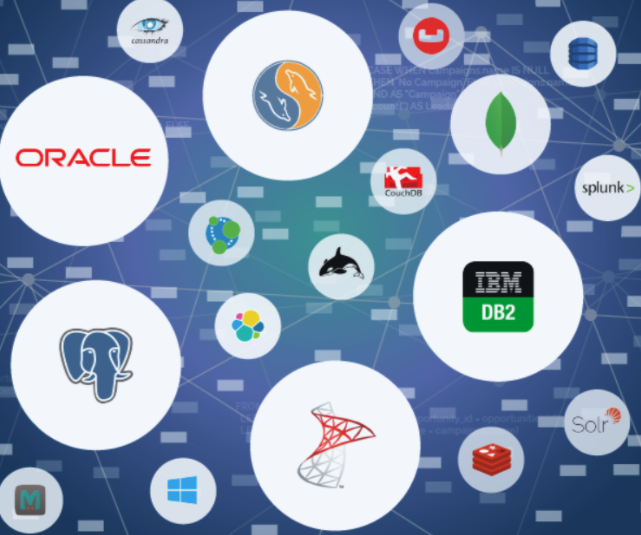

Purpose
Is your data making you money? When data creates a competitive advantage, one needs the right tools and applications to create an unbeatable edge. In these times, the issue isn’t about if we have enough data but how to turn all that data into insights and afterwards take action. As one Amazon Employee put it, “He who has the data, is king.” Come learn here on this website with me on how to leverage your data to make you money!
Data Mining
Data mining is the study of historical data and it can be visually communicated. Data mining process includes a number of tasks such as association, classification, prediction, clustering, time series analysis and so on. Data mining helps businesses understand which marketing campaigns will likely generate the most engagement, classify customers, display personalized advertisements, and optimize marketing spend. Understanding the past is crucial to make informed decisions.

Predictive Analytics
Wherever you store your data we can perform statistical analysis to draw out the solution. Through a series of machine learning algorithms, we can attain valuable information that can help your company improve in any way. Statistics is a process of gathering, analyzing, reviewing, interpreting, and presenting data. You won’t ever have the hassle of manipulating, transforming, and analyzing the data. We will take care of that.

Data Collection
It all begins with a question. Can a new hire increase pizza delivery time by 10 minutes, 30 min, etc..? How can I increase the efficiency of my marketing team? No matter what, data is the answer. Through data mining, we can collect the information to answer those questions. In order to make an informed decision 1, 3, to 6 months of data is collected. From relational to non-relational databases we can properly organize your data to visualize, study, and predict your data.
